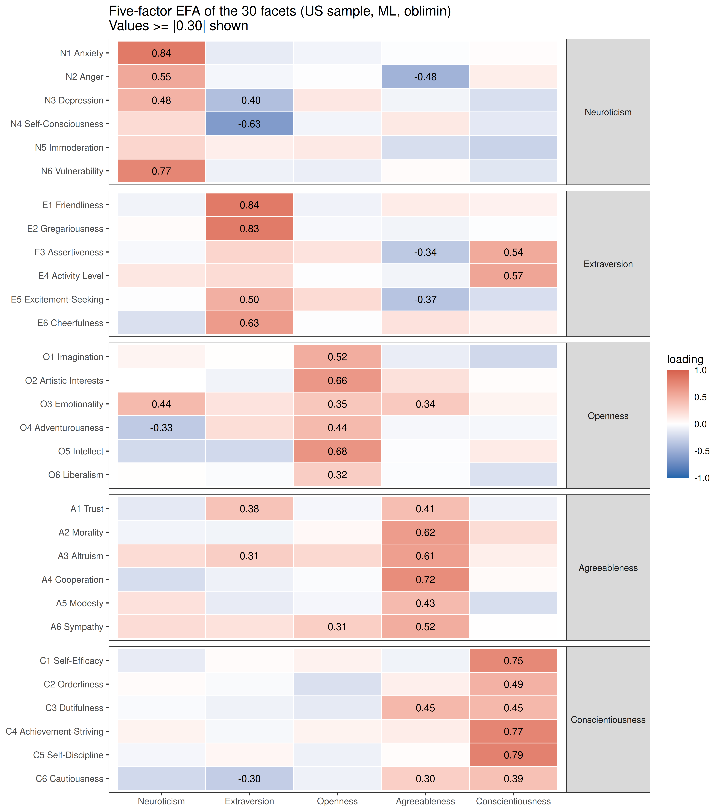
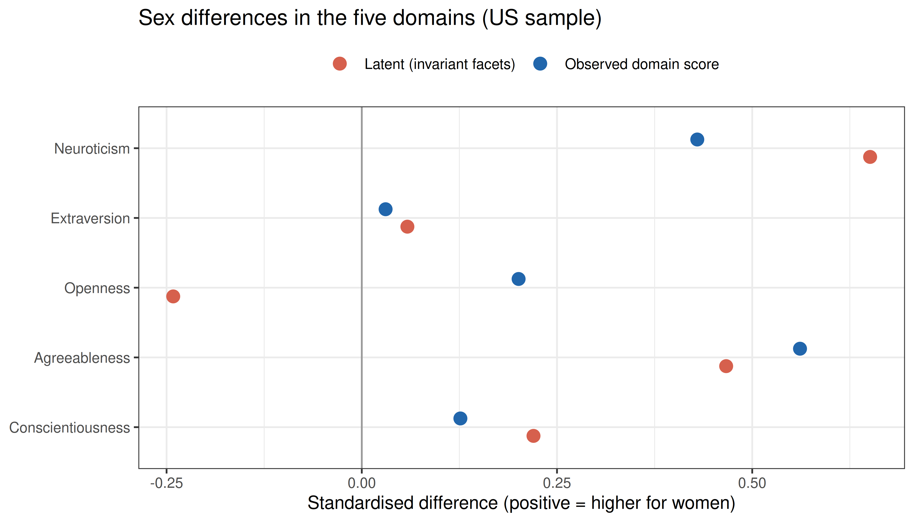
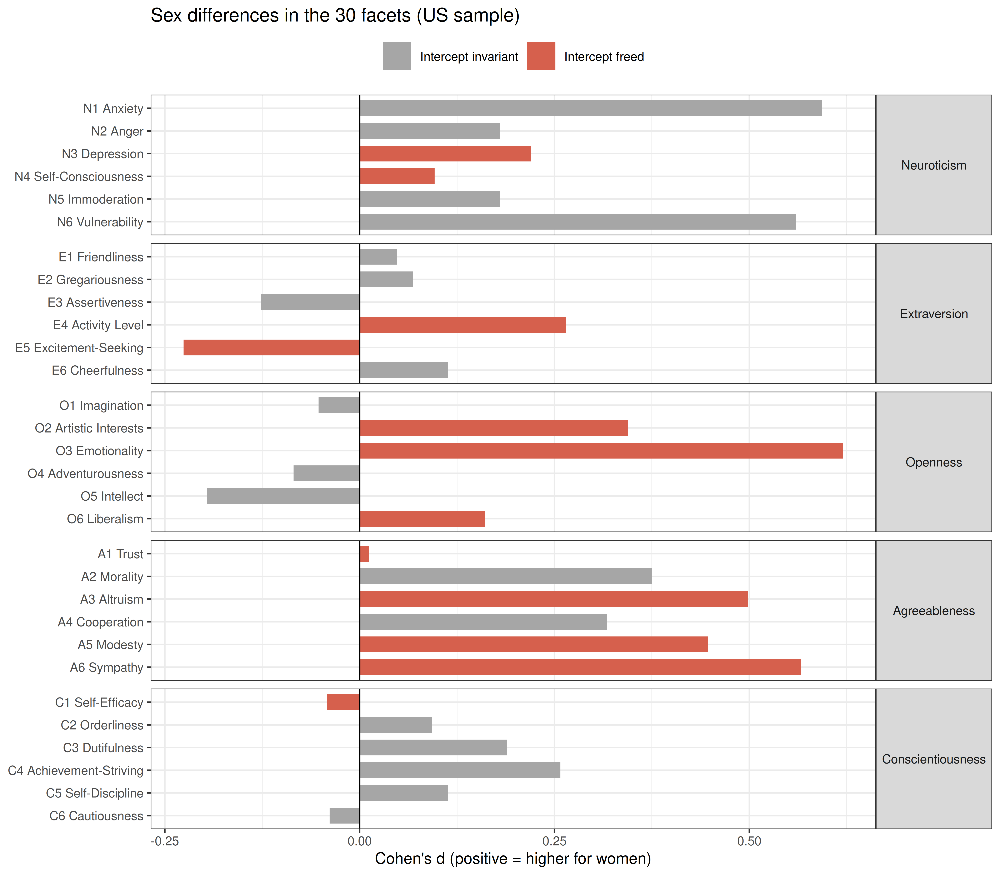
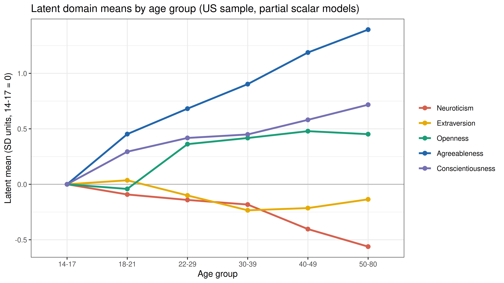
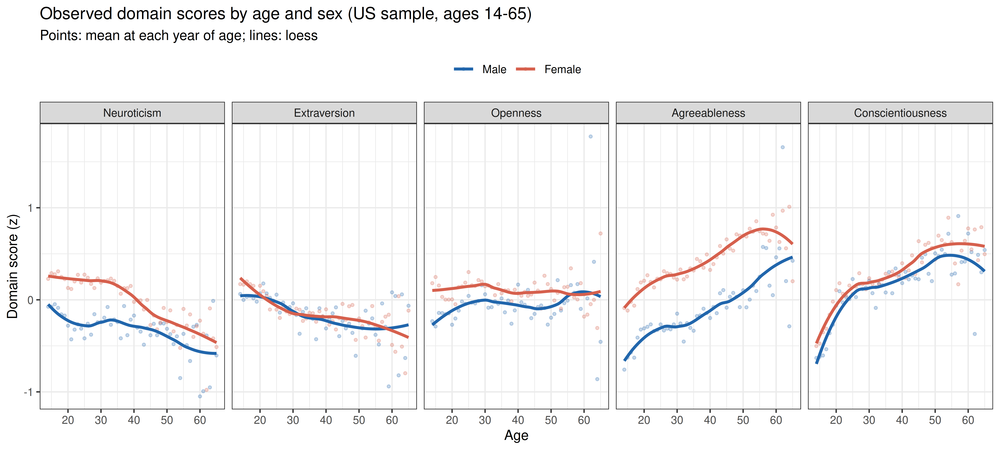
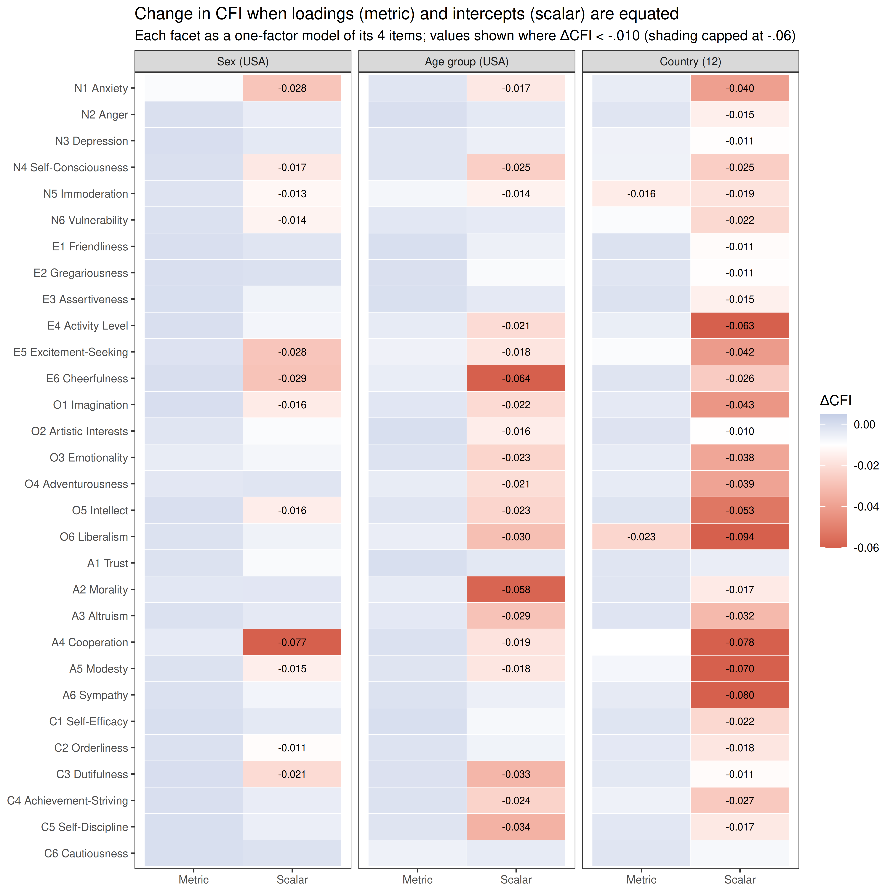

| Rule | Excluded | Remaining |
|---|---|---|
| All 120 items answered | 208,774 | 410,376 |
| Sex recorded | 0 | 619,150 |
| Age between 14 and 80 | 10,260 | 608,890 |
| Even-odd consistency at least .30 | 2,888 | 616,262 |
| All rules together | 215,109 | 404,041 |
IPIP-NEO-120: Measurement Invariance Across Sex, Countries and Age
Description
Comparing the mean scores of two groups assumes that the questionnaire measures the same thing in the same way in both. Measurement invariance tests that assumption, in a sequence of increasingly strict multi-group confirmatory factor models (Vandenberg & Lance, 2000; Putnick & Bornstein, 2016):
| Level | Constraint across groups | What it allows |
|---|---|---|
| Configural | Same factor structure | The construct has the same form |
| Metric (weak) | Equal loadings | Comparing correlations and regressions |
| Scalar (strong) | Equal loadings and intercepts | Comparing means |
If scalar invariance fails, a group difference in observed scores mixes a difference in the trait with differences in how particular items or facets work in each group. Partial invariance (Byrne, Shavelson & Muthén, 1989) frees the intercepts that differ and compares latent means through the indicators that remain invariant. A step is accepted here when it lowers CFI by no more than .010 and raises RMSEA by no more than .015 (Chen, 2007); chi-square tests are not used, because with thousands of respondents per group they reject any constraint.
The questionnaire is the IPIP-NEO-120 (Johnson, 2014): 120 public-domain items from the International Personality Item Pool that measure the 30 facets of the NEO PI-R five-factor model, four items per facet and six facets per domain. Respondents rated each item from 1 (very inaccurate) to 5 (very accurate). The tests below ask whether its scores can be compared between men and women, between 12 countries and between age groups, and what the comparisons show where they are allowed.
Data and cleaning
Johnson made the 619,150 protocols collected online between 2001 and 2011 freely available on the Open Science Framework, with the scoring key. data/prepare_ipipneo120.R applies the rules below. Johnson had already screened the protocols, so the consistency check (the even-odd index of Johnson, 2005, on the 30 pairs of half-facets) removes very few; most exclusions are incomplete protocols.
From the cleaned protocols, a reproducible random sample was kept: 30,000 from the USA, used for the comparisons of sex and age within one country, and up to 3,000 from each of 11 other countries.
| Country | Respondents | % women | Mean age | SD age |
|---|---|---|---|---|
| USA | 30,000 | 60.0 | 24.9 | 9.9 |
| Canada | 3,000 | 61.2 | 25.7 | 10.2 |
| UK | 3,000 | 55.8 | 26.0 | 10.3 |
| Australia | 3,000 | 63.6 | 26.3 | 10.0 |
| Ireland | 2,212 | 55.9 | 25.3 | 8.9 |
| New Zealand | 2,549 | 56.6 | 26.5 | 10.3 |
| Singapore | 3,000 | 55.7 | 21.2 | 4.8 |
| India | 3,000 | 36.8 | 26.2 | 7.1 |
| Philippines | 2,931 | 65.2 | 21.7 | 6.4 |
| Netherlands | 1,977 | 50.8 | 27.2 | 9.5 |
| Sweden | 1,573 | 47.8 | 28.2 | 9.6 |
| Germany | 1,384 | 47.6 | 26.8 | 8.3 |
Item List
Show the 120 items with their facet and keying
| Item | Domain | Code | Facet | Key | Wording |
|---|---|---|---|---|---|
| I1 | Neuroticism | N1 | Anxiety | + | Worry about things. |
| I2 | Extraversion | E1 | Friendliness | + | Make friends easily. |
| I3 | Openness | O1 | Imagination | + | Have a vivid imagination. |
| I4 | Agreeableness | A1 | Trust | + | Trust others. |
| I5 | Conscientiousness | C1 | Self-Efficacy | + | Complete tasks successfully. |
| I6 | Neuroticism | N2 | Anger | + | Get angry easily. |
| I7 | Extraversion | E2 | Gregariousness | + | Love large parties. |
| I8 | Openness | O2 | Artistic Interests | + | Believe in the importance of art. |
| I9 | Agreeableness | A2 | Morality | - | Use others for my own ends. |
| I10 | Conscientiousness | C2 | Orderliness | + | Like to tidy up. |
| I11 | Neuroticism | N3 | Depression | + | Often feel blue. |
| I12 | Extraversion | E3 | Assertiveness | + | Take charge. |
| I13 | Openness | O3 | Emotionality | + | Experience my emotions intensely. |
| I14 | Agreeableness | A3 | Altruism | + | Love to help others. |
| I15 | Conscientiousness | C3 | Dutifulness | + | Keep my promises. |
| I16 | Neuroticism | N4 | Self-Consciousness | + | Find it difficult to approach others. |
| I17 | Extraversion | E4 | Activity Level | + | Am always busy. |
| I18 | Openness | O4 | Adventurousness | + | Prefer variety to routine. |
| I19 | Agreeableness | A4 | Cooperation | - | Love a good fight. |
| I20 | Conscientiousness | C4 | Achievement-Striving | + | Work hard. |
| I21 | Neuroticism | N5 | Immoderation | + | Go on binges. |
| I22 | Extraversion | E5 | Excitement-Seeking | + | Love excitement. |
| I23 | Openness | O5 | Intellect | + | Love to read challenging material. |
| I24 | Agreeableness | A5 | Modesty | - | Believe that I am better than others. |
| I25 | Conscientiousness | C5 | Self-Discipline | + | Am always prepared. |
| I26 | Neuroticism | N6 | Vulnerability | + | Panic easily. |
| I27 | Extraversion | E6 | Cheerfulness | + | Radiate joy. |
| I28 | Openness | O6 | Liberalism | + | Tend to vote for liberal political candidates. |
| I29 | Agreeableness | A6 | Sympathy | + | Sympathize with the homeless. |
| I30 | Conscientiousness | C6 | Cautiousness | - | Jump into things without thinking. |
| I31 | Neuroticism | N1 | Anxiety | + | Fear for the worst. |
| I32 | Extraversion | E1 | Friendliness | + | Feel comfortable around people. |
| I33 | Openness | O1 | Imagination | + | Enjoy wild flights of fantasy. |
| I34 | Agreeableness | A1 | Trust | + | Believe that others have good intentions. |
| I35 | Conscientiousness | C1 | Self-Efficacy | + | Excel in what I do. |
| I36 | Neuroticism | N2 | Anger | + | Get irritated easily. |
| I37 | Extraversion | E2 | Gregariousness | + | Talk to a lot of different people at parties. |
| I38 | Openness | O2 | Artistic Interests | + | See beauty in things that others might not notice. |
| I39 | Agreeableness | A2 | Morality | - | Cheat to get ahead. |
| I40 | Conscientiousness | C2 | Orderliness | - | Often forget to put things back in their proper place. |
| I41 | Neuroticism | N3 | Depression | + | Dislike myself. |
| I42 | Extraversion | E3 | Assertiveness | + | Try to lead others. |
| I43 | Openness | O3 | Emotionality | + | Feel others’ emotions. |
| I44 | Agreeableness | A3 | Altruism | + | Am concerned about others. |
| I45 | Conscientiousness | C3 | Dutifulness | + | Tell the truth. |
| I46 | Neuroticism | N4 | Self-Consciousness | + | Am afraid to draw attention to myself. |
| I47 | Extraversion | E4 | Activity Level | + | Am always on the go. |
| I48 | Openness | O4 | Adventurousness | - | Prefer to stick with things that I know. |
| I49 | Agreeableness | A4 | Cooperation | - | Yell at people. |
| I50 | Conscientiousness | C4 | Achievement-Striving | + | Do more than what’s expected of me. |
| I51 | Neuroticism | N5 | Immoderation | - | Rarely overindulge. |
| I52 | Extraversion | E5 | Excitement-Seeking | + | Seek adventure. |
| I53 | Openness | O5 | Intellect | - | Avoid philosophical discussions. |
| I54 | Agreeableness | A5 | Modesty | - | Think highly of myself. |
| I55 | Conscientiousness | C5 | Self-Discipline | + | Carry out my plans. |
| I56 | Neuroticism | N6 | Vulnerability | + | Become overwhelmed by events. |
| I57 | Extraversion | E6 | Cheerfulness | + | Have a lot of fun. |
| I58 | Openness | O6 | Liberalism | + | Believe that there is no absolute right or wrong. |
| I59 | Agreeableness | A6 | Sympathy | + | Feel sympathy for those who are worse off than myself. |
| I60 | Conscientiousness | C6 | Cautiousness | - | Make rash decisions. |
| I61 | Neuroticism | N1 | Anxiety | + | Am afraid of many things. |
| I62 | Extraversion | E1 | Friendliness | - | Avoid contacts with others. |
| I63 | Openness | O1 | Imagination | + | Love to daydream. |
| I64 | Agreeableness | A1 | Trust | + | Trust what people say. |
| I65 | Conscientiousness | C1 | Self-Efficacy | + | Handle tasks smoothly. |
| I66 | Neuroticism | N2 | Anger | + | Lose my temper. |
| I67 | Extraversion | E2 | Gregariousness | - | Prefer to be alone. |
| I68 | Openness | O2 | Artistic Interests | - | Do not like poetry. |
| I69 | Agreeableness | A2 | Morality | - | Take advantage of others. |
| I70 | Conscientiousness | C2 | Orderliness | - | Leave a mess in my room. |
| I71 | Neuroticism | N3 | Depression | + | Am often down in the dumps. |
| I72 | Extraversion | E3 | Assertiveness | + | Take control of things. |
| I73 | Openness | O3 | Emotionality | - | Rarely notice my emotional reactions. |
| I74 | Agreeableness | A3 | Altruism | - | Am indifferent to the feelings of others. |
| I75 | Conscientiousness | C3 | Dutifulness | - | Break rules. |
| I76 | Neuroticism | N4 | Self-Consciousness | + | Only feel comfortable with friends. |
| I77 | Extraversion | E4 | Activity Level | + | Do a lot in my spare time. |
| I78 | Openness | O4 | Adventurousness | - | Dislike changes. |
| I79 | Agreeableness | A4 | Cooperation | - | Insult people. |
| I80 | Conscientiousness | C4 | Achievement-Striving | - | Do just enough work to get by. |
| I81 | Neuroticism | N5 | Immoderation | - | Easily resist temptations. |
| I82 | Extraversion | E5 | Excitement-Seeking | + | Enjoy being reckless. |
| I83 | Openness | O5 | Intellect | - | Have difficulty understanding abstract ideas. |
| I84 | Agreeableness | A5 | Modesty | - | Have a high opinion of myself. |
| I85 | Conscientiousness | C5 | Self-Discipline | - | Waste my time. |
| I86 | Neuroticism | N6 | Vulnerability | + | Feel that I’m unable to deal with things. |
| I87 | Extraversion | E6 | Cheerfulness | + | Love life. |
| I88 | Openness | O6 | Liberalism | - | Tend to vote for conservative political candidates. |
| I89 | Agreeableness | A6 | Sympathy | - | Am not interested in other people’s problems. |
| I90 | Conscientiousness | C6 | Cautiousness | - | Rush into things. |
| I91 | Neuroticism | N1 | Anxiety | + | Get stressed out easily. |
| I92 | Extraversion | E1 | Friendliness | - | Keep others at a distance. |
| I93 | Openness | O1 | Imagination | + | Like to get lost in thought. |
| I94 | Agreeableness | A1 | Trust | - | Distrust people. |
| I95 | Conscientiousness | C1 | Self-Efficacy | + | Know how to get things done. |
| I96 | Neuroticism | N2 | Anger | - | Am not easily annoyed. |
| I97 | Extraversion | E2 | Gregariousness | - | Avoid crowds. |
| I98 | Openness | O2 | Artistic Interests | - | Do not enjoy going to art museums. |
| I99 | Agreeableness | A2 | Morality | - | Obstruct others’ plans. |
| I100 | Conscientiousness | C2 | Orderliness | - | Leave my belongings around. |
| I101 | Neuroticism | N3 | Depression | - | Feel comfortable with myself. |
| I102 | Extraversion | E3 | Assertiveness | - | Wait for others to lead the way. |
| I103 | Openness | O3 | Emotionality | - | Don’t understand people who get emotional. |
| I104 | Agreeableness | A3 | Altruism | - | Take no time for others. |
| I105 | Conscientiousness | C3 | Dutifulness | - | Break my promises. |
| I106 | Neuroticism | N4 | Self-Consciousness | - | Am not bothered by difficult social situations. |
| I107 | Extraversion | E4 | Activity Level | - | Like to take it easy. |
| I108 | Openness | O4 | Adventurousness | - | Am attached to conventional ways. |
| I109 | Agreeableness | A4 | Cooperation | - | Get back at others. |
| I110 | Conscientiousness | C4 | Achievement-Striving | - | Put little time and effort into my work. |
| I111 | Neuroticism | N5 | Immoderation | - | Am able to control my cravings. |
| I112 | Extraversion | E5 | Excitement-Seeking | + | Act wild and crazy. |
| I113 | Openness | O5 | Intellect | - | Am not interested in theoretical discussions. |
| I114 | Agreeableness | A5 | Modesty | - | Boast about my virtues. |
| I115 | Conscientiousness | C5 | Self-Discipline | - | Have difficulty starting tasks. |
| I116 | Neuroticism | N6 | Vulnerability | - | Remain calm under pressure. |
| I117 | Extraversion | E6 | Cheerfulness | + | Look at the bright side of life. |
| I118 | Openness | O6 | Liberalism | - | Believe that we should be tough on crime. |
| I119 | Agreeableness | A6 | Sympathy | - | Try not to think about the needy. |
| I120 | Conscientiousness | C6 | Cautiousness | - | Act without thinking. |
Reliability
Code
facet_alpha <- sapply(facet_codes, function(f)
psych::alpha(df_ipipneo120[, key$item[key$facet_code == f]], warnings = FALSE)$total$raw_alpha)
domain_alpha <- sapply(names(domains), function(dom)
psych::alpha(df_ipipneo120[, key$item[substr(key$facet_code, 1, 1) == dom]], warnings = FALSE)$total$raw_alpha)
knitr::kable(data.frame(domain = unname(domains), alpha = domain_alpha,
facet_min = tapply(facet_alpha, substr(facet_codes, 1, 1), min)[names(domains)],
facet_max = tapply(facet_alpha, substr(facet_codes, 1, 1), max)[names(domains)],
lowest = sapply(names(domains), function(dom) {
a <- facet_alpha[substr(facet_codes, 1, 1) == dom]; facet_label[names(which.min(a))] })),
digits = 2, row.names = FALSE,
col.names = c("Domain (24 items)", "Alpha", "Lowest facet alpha", "Highest facet alpha", "Lowest facet"))| Domain (24 items) | Alpha | Lowest facet alpha | Highest facet alpha | Lowest facet |
|---|---|---|---|---|
| Neuroticism | 0.90 | 0.70 | 0.87 | N5 Immoderation |
| Extraversion | 0.89 | 0.69 | 0.85 | E4 Activity Level |
| Openness | 0.82 | 0.61 | 0.75 | O6 Liberalism |
| Agreeableness | 0.86 | 0.70 | 0.85 | A4 Cooperation |
| Conscientiousness | 0.91 | 0.68 | 0.89 | C3 Dutifulness |
With four items each, the facet scales are short, and their alphas (0.61-0.89) are lower than those of the 24-item domain scales. This is why the invariance tests of the domains use the six facet scores as indicators rather than the 24 single items.
The Five-Factor Structure
Before testing whether the structure is the same across groups, check that it is there: an exploratory factor analysis of the 30 facets in the US sample.
Code
efa <- fa(us[, facet_codes], nfactors = 5, rotate = "oblimin", fm = "ml")
L <- unclass(efa$loadings)
colnames(L) <- sapply(seq_len(ncol(L)), function(j)
names(which.max(tapply(L[, j], substr(facet_codes, 1, 1), mean))))
L <- L[, names(domains)]
found <- colnames(L)[apply(abs(L), 1, which.max)]
cat(sprintf("Facets whose largest loading is on their own domain: %d of %d\n",
sum(found == substr(facet_codes, 1, 1)), length(facet_codes)))Facets whose largest loading is on their own domain: 24 of 30Code
misplaced <- found != substr(facet_codes, 1, 1)
print(data.frame(facet = facet_label[misplaced], largest_loading_on = domains[found[misplaced]], row.names = NULL)) facet largest_loading_on
1 N4 Self-Consciousness Extraversion
2 N5 Immoderation Conscientiousness
3 E3 Assertiveness Conscientiousness
4 E4 Activity Level Conscientiousness
5 O3 Emotionality Neuroticism
6 C3 Dutifulness AgreeablenessCode
long <- melt(L, varnames = c("facet", "factor"), value.name = "loading")
long$label <- factor(facet_label[as.character(long$facet)], levels = rev(facet_label))
long$domain <- factor(domains[substr(as.character(long$facet), 1, 1)], levels = domains)
long$factor <- factor(domains[as.character(long$factor)], levels = domains)
ggplot(long, aes(x = factor, y = label, fill = loading)) +
geom_tile(color = "white", linewidth = 0.3) +
geom_text(aes(label = ifelse(abs(loading) >= 0.30, sprintf("%.2f", loading), "")), size = 2.8) +
scale_fill_gradient2(low = "#2166ac", mid = "white", high = "#d6604d",
midpoint = 0, limits = c(-1, 1), name = "loading") +
facet_grid(domain ~ ., scales = "free_y", space = "free_y") +
theme_bw(base_size = 9) +
theme(strip.text.y = element_text(angle = 0), axis.title = element_blank(), panel.grid = element_blank()) +
ggtitle("Five-factor EFA of the 30 facets (US sample, ML, oblimin)\nValues >= |0.30| shown")
The facets that load more on another domain than on their own each make sense from their content: activity level and assertiveness go with the energetic, goal-directed side of Conscientiousness, self-consciousness with low Extraversion, immoderation (giving in to cravings) with low Conscientiousness, emotionality (openness to feelings) with Neuroticism, and dutifulness shares Conscientiousness with Agreeableness. A one-factor model per domain therefore cannot fit perfectly, which the next step deals with.
Step 1: A Baseline Model for Each Domain
Invariance is tested on a model that fits in each group, so the first step is a model that fits in the whole sample. Each domain is modelled as one factor measured by its six facet scores. A single factor rarely fits a Big Five domain perfectly, because some facets share variance beyond the domain (Depression and Self-Consciousness, for example, are closer to each other than to Anger). Residual covariances are added from the modification indices in the US sample, the largest first and at most three per domain, and kept fixed in form for all the comparisons.
Code
baselines <- lapply(setNames(names(domains), names(domains)), baseline_model, data = us)
pretty_cov <- function(x) {
p <- strsplit(x, " ~~ ")[[1]]
paste(facet_names[p[1]], "with", facet_names[p[2]])
}
knitr::kable(data.frame(
domain = unname(domains),
cfi0 = sapply(baselines, function(b) b$start[["cfi.robust"]]),
rmsea0 = sapply(baselines, function(b) b$start[["rmsea.robust"]]),
added = sapply(baselines, function(b) paste(sapply(b$added, pretty_cov), collapse = "; ")),
cfi = sapply(baselines, function(b) b$final[["cfi.robust"]]),
rmsea = sapply(baselines, function(b) b$final[["rmsea.robust"]]),
srmr = sapply(baselines, function(b) b$final[["srmr"]])),
digits = 3, row.names = FALSE,
col.names = c("Domain", "CFI (one factor)", "RMSEA (one factor)", "Residual covariances added",
"CFI", "RMSEA", "SRMR"))| Domain | CFI (one factor) | RMSEA (one factor) | Residual covariances added | CFI | RMSEA | SRMR |
|---|---|---|---|---|---|---|
| Neuroticism | 0.944 | 0.113 | Depression with Self-Consciousness; Depression with Immoderation | 0.980 | 0.077 | 0.033 |
| Extraversion | 0.888 | 0.153 | Gregariousness with Excitement-Seeking; Assertiveness with Activity Level | 0.978 | 0.076 | 0.027 |
| Openness | 0.925 | 0.080 | Artistic Interests with Emotionality | 0.955 | 0.066 | 0.034 |
| Agreeableness | 0.805 | 0.174 | Altruism with Sympathy; Trust with Morality; Trust with Modesty | 0.989 | 0.050 | 0.019 |
| Conscientiousness | 0.936 | 0.122 | Dutifulness with Cautiousness; Orderliness with Self-Discipline | 0.982 | 0.072 | 0.031 |
The added covariances are substantively sensible pairs of neighbouring facets, and with them every domain model fits well.
Step 2: Men and Women
Code
inv_sex <- run_domains(us, "sex")
invariance_table(inv_sex)| Domain | Model | CFI | RMSEA | SRMR | ΔCFI | ΔRMSEA |
|---|---|---|---|---|---|---|
| Neuroticism | configural | 0.978 | 0.079 | 0.030 | NA | NA |
| Neuroticism | metric | 0.976 | 0.071 | 0.033 | -0.002 | -0.008 |
| Neuroticism | scalar | 0.961 | 0.080 | 0.044 | -0.015 | 0.009 |
| Neuroticism | partial | 0.972 | 0.072 | 0.037 | -0.004 | 0.001 |
| Extraversion | configural | 0.980 | 0.074 | 0.023 | NA | NA |
| Extraversion | metric | 0.980 | 0.064 | 0.024 | 0.000 | -0.010 |
| Extraversion | scalar | 0.951 | 0.088 | 0.044 | -0.029 | 0.024 |
| Extraversion | partial | 0.975 | 0.066 | 0.030 | -0.005 | 0.002 |
| Openness | configural | 0.950 | 0.071 | 0.032 | NA | NA |
| Openness | metric | 0.944 | 0.065 | 0.036 | -0.006 | -0.006 |
| Openness | scalar | 0.766 | 0.120 | 0.077 | -0.178 | 0.055 |
| Openness | partial | 0.942 | 0.063 | 0.037 | -0.002 | -0.002 |
| Agreeableness | configural | 0.987 | 0.053 | 0.018 | NA | NA |
| Agreeableness | metric | 0.986 | 0.046 | 0.021 | -0.001 | -0.007 |
| Agreeableness | scalar | 0.928 | 0.091 | 0.061 | -0.058 | 0.045 |
| Agreeableness | partial | 0.986 | 0.045 | 0.021 | 0.000 | -0.001 |
| Conscientiousness | configural | 0.982 | 0.075 | 0.029 | NA | NA |
| Conscientiousness | metric | 0.979 | 0.068 | 0.034 | -0.002 | -0.007 |
| Conscientiousness | scalar | 0.962 | 0.082 | 0.041 | -0.017 | 0.014 |
| Conscientiousness | partial | 0.971 | 0.073 | 0.038 | -0.008 | 0.005 |
Code
freed_table(inv_sex)| Domain | Metric invariance | Facet intercepts freed (in order) | Partial scalar invariance reached |
|---|---|---|---|
| Neuroticism | yes | N3 Depression, N4 Self-Consciousness | yes |
| Extraversion | yes | E4 Activity Level, E5 Excitement-Seeking | yes |
| Openness | yes | O3 Emotionality, O2 Artistic Interests, O6 Liberalism | yes |
| Agreeableness | yes | A1 Trust, A6 Sympathy, A5 Modesty, A3 Altruism | yes |
| Conscientiousness | yes | C1 Self-Efficacy | yes |
Code
# Cohen's d of women minus men, used for the domains and facets below
cohen_d <- function(x, g) {
m <- tapply(x, g, mean); v <- tapply(x, g, var); n <- tapply(x, g, length)
unname((m["Female"] - m["Male"]) / sqrt(sum((n - 1) * v) / (sum(n) - 2)))
}
facet_d <- data.frame(facet = facet_codes, d = sapply(facet_codes, function(f) cohen_d(us[[f]], us$sex)))Metric invariance holds in 5 of the 5 domains: the facets measure the domains with the same loadings for men and women. Full scalar invariance fails in every domain; it holds once some facet intercepts are freed. A freed intercept means that men and women with the same level of the domain score differently on that facet. In Agreeableness, for example, women score much higher than men on Sympathy (d = 0.57), Altruism (0.50) and Modesty (0.45), but not on Trust (0.01), so the facets cannot all share one domain-level difference (the facet chart below).
Latent and observed sex differences
The latent mean difference uses only the invariant facets; the observed difference is the plain difference in the 24-item domain score. Positive values mean higher scores for women.
Code
domain_score <- sapply(names(domains), function(dom) rowMeans(us[, key$item[substr(key$facet_code, 1, 1) == dom]]))
sex_diff <- data.frame(
domain = factor(unname(domains), levels = rev(domains)),
latent = sapply(names(domains), function(dom) latent_means(inv_sex[[dom]], dom)$mean[2]),
observed = apply(domain_score, 2, cohen_d, g = us$sex))
knitr::kable(sex_diff, digits = 2, row.names = FALSE,
col.names = c("Domain", "Latent d (partial scalar model)", "Observed d (domain score)"))| Domain | Latent d (partial scalar model) | Observed d (domain score) |
|---|---|---|
| Neuroticism | 0.65 | 0.43 |
| Extraversion | 0.06 | 0.03 |
| Openness | -0.24 | 0.20 |
| Agreeableness | 0.47 | 0.56 |
| Conscientiousness | 0.22 | 0.13 |
Code
ggplot(melt(sex_diff, id.vars = "domain"), aes(x = value, y = domain, colour = variable)) +
geom_vline(xintercept = 0, colour = "grey60") +
geom_point(size = 3, position = position_dodge(width = 0.5)) +
scale_colour_manual(values = c(latent = "#d6604d", observed = "#2166ac"),
labels = c(latent = "Latent (invariant facets)", observed = "Observed domain score"), name = NULL) +
labs(x = "Standardised difference (positive = higher for women)", y = NULL) +
theme_bw(base_size = 10) + theme(legend.position = "top") +
ggtitle("Sex differences in the five domains (US sample)")
Code
facet_d$domain <- factor(domains[substr(facet_d$facet, 1, 1)], levels = domains)
facet_d$freed <- facet_d$facet %in% unlist(lapply(inv_sex, `[[`, "freed"))
facet_d$label <- factor(facet_label[facet_d$facet], levels = rev(facet_label))
ggplot(facet_d, aes(x = d, y = label, fill = freed)) +
geom_col(width = 0.7) +
geom_vline(xintercept = 0) +
scale_fill_manual(values = c(`FALSE` = "grey65", `TRUE` = "#d6604d"),
labels = c(`FALSE` = "Intercept invariant", `TRUE` = "Intercept freed"), name = NULL) +
facet_grid(domain ~ ., scales = "free_y", space = "free_y") +
labs(x = "Cohen's d (positive = higher for women)", y = NULL) +
theme_bw(base_size = 9) + theme(legend.position = "top", strip.text.y = element_text(angle = 0)) +
ggtitle("Sex differences in the 30 facets (US sample)")
Costa, Terracciano and McCrae (2001), across 26 cultures, found that women score higher than men on Neuroticism and Agreeableness, and that some facets show differences in the opposite direction to their domain: women higher on openness to feelings, men higher on assertiveness and openness to ideas. The same appears here: women score higher on Emotionality (openness to feelings, d = 0.62), men on Assertiveness (-0.13) and Intellect (openness to ideas, -0.20). The comparison of latent and observed differences is where invariance testing changes the conclusion. For Neuroticism the latent difference (0.65) is larger than the observed one (0.43). For Openness the two even differ in sign: in the observed domain score women score higher (+0.20), because they score higher on the facets whose intercepts had to be freed (Emotionality d = 0.62, Artistic Interests d = 0.34, Liberalism d = 0.16); the latent difference, which rests on the invariant facets (Imagination, Adventurousness, Intellect), slightly favours men (-0.24). Which sex is “more open” depends on which facets are treated as measuring Openness in the same way for both, which is exactly the question measurement invariance answers.
Step 3: Twelve Countries
Code
inv_country <- run_domains(dat, "country")
invariance_table(inv_country)| Domain | Model | CFI | RMSEA | SRMR | ΔCFI | ΔRMSEA |
|---|---|---|---|---|---|---|
| Neuroticism | configural | 0.978 | 0.080 | 0.031 | NA | NA |
| Neuroticism | metric | 0.975 | 0.066 | 0.037 | -0.003 | -0.014 |
| Neuroticism | scalar | 0.944 | 0.085 | 0.051 | -0.032 | 0.019 |
| Neuroticism | partial | 0.967 | 0.069 | 0.041 | -0.008 | 0.003 |
| Extraversion | configural | 0.973 | 0.084 | 0.028 | NA | NA |
| Extraversion | metric | 0.970 | 0.069 | 0.034 | -0.003 | -0.015 |
| Extraversion | scalar | 0.936 | 0.085 | 0.048 | -0.034 | 0.016 |
| Extraversion | partial | 0.963 | 0.071 | 0.038 | -0.007 | 0.002 |
| Openness | configural | 0.948 | 0.069 | 0.032 | NA | NA |
| Openness | metric | 0.943 | 0.058 | 0.036 | -0.005 | -0.011 |
| Openness | scalar | 0.798 | 0.093 | 0.066 | -0.145 | 0.035 |
| Openness | partial | 0.940 | 0.057 | 0.037 | -0.004 | 0.000 |
| Agreeableness | configural | 0.987 | 0.053 | 0.019 | NA | NA |
| Agreeableness | metric | 0.982 | 0.048 | 0.029 | -0.006 | -0.005 |
| Agreeableness | scalar | 0.925 | 0.082 | 0.050 | -0.057 | 0.033 |
| Agreeableness | partial | 0.979 | 0.049 | 0.031 | -0.002 | 0.001 |
| Conscientiousness | configural | 0.976 | 0.084 | 0.033 | NA | NA |
| Conscientiousness | metric | 0.973 | 0.069 | 0.038 | -0.003 | -0.015 |
| Conscientiousness | scalar | 0.951 | 0.078 | 0.048 | -0.022 | 0.009 |
| Conscientiousness | partial | 0.969 | 0.068 | 0.040 | -0.004 | 0.000 |
Code
freed_table(inv_country)| Domain | Metric invariance | Facet intercepts freed (in order) | Partial scalar invariance reached |
|---|---|---|---|
| Neuroticism | yes | N3 Depression, N5 Immoderation | yes |
| Extraversion | yes | E2 Gregariousness, E6 Cheerfulness, E5 Excitement-Seeking | yes |
| Openness | yes | O2 Artistic Interests, O6 Liberalism, O1 Imagination, O4 Adventurousness | yes |
| Agreeableness | yes | A4 Cooperation, A6 Sympathy, A5 Modesty, A1 Trust | yes |
| Conscientiousness | yes | C6 Cautiousness, C2 Orderliness, C5 Self-Discipline | yes |
Across the twelve countries the picture is similar at the domain level: metric invariance holds in 5 of the 5 domains, and comparing latent means requires freeing several facet intercepts per domain. The facet-level map below shows how much stricter the comparison of countries is when the items themselves are examined.
Step 4: Age Groups
Code
inv_age <- run_domains(us, "agegroup")
invariance_table(inv_age)| Domain | Model | CFI | RMSEA | SRMR | ΔCFI | ΔRMSEA |
|---|---|---|---|---|---|---|
| Neuroticism | configural | 0.979 | 0.079 | 0.030 | NA | NA |
| Neuroticism | metric | 0.977 | 0.065 | 0.035 | -0.002 | -0.014 |
| Neuroticism | scalar | 0.959 | 0.075 | 0.046 | -0.018 | 0.010 |
| Neuroticism | partial | 0.968 | 0.070 | 0.042 | -0.009 | 0.005 |
| Extraversion | configural | 0.975 | 0.081 | 0.027 | NA | NA |
| Extraversion | metric | 0.975 | 0.065 | 0.029 | -0.001 | -0.016 |
| Extraversion | scalar | 0.912 | 0.103 | 0.069 | -0.063 | 0.038 |
| Extraversion | partial | 0.967 | 0.070 | 0.036 | -0.008 | 0.004 |
| Openness | configural | 0.957 | 0.065 | 0.030 | NA | NA |
| Openness | metric | 0.943 | 0.061 | 0.039 | -0.014 | -0.004 |
| Openness | scalar | 0.842 | 0.087 | 0.061 | -0.101 | 0.027 |
| Openness | partial | 0.939 | 0.059 | 0.041 | -0.005 | -0.001 |
| Agreeableness | configural | 0.992 | 0.041 | 0.014 | NA | NA |
| Agreeableness | metric | 0.991 | 0.035 | 0.020 | -0.002 | -0.006 |
| Agreeableness | scalar | 0.926 | 0.084 | 0.051 | -0.065 | 0.049 |
| Agreeableness | partial | 0.984 | 0.044 | 0.024 | -0.007 | 0.009 |
| Conscientiousness | configural | 0.981 | 0.073 | 0.029 | NA | NA |
| Conscientiousness | metric | 0.975 | 0.066 | 0.038 | -0.006 | -0.007 |
| Conscientiousness | scalar | 0.943 | 0.086 | 0.050 | -0.033 | 0.020 |
| Conscientiousness | partial | 0.967 | 0.071 | 0.042 | -0.008 | 0.005 |
Code
freed_table(inv_age)| Domain | Metric invariance | Facet intercepts freed (in order) | Partial scalar invariance reached |
|---|---|---|---|
| Neuroticism | yes | N3 Depression, N6 Vulnerability | yes |
| Extraversion | yes | E5 Excitement-Seeking, E2 Gregariousness, E3 Assertiveness | yes |
| Openness | no | O1 Imagination, O6 Liberalism, O2 Artistic Interests | yes |
| Agreeableness | yes | A1 Trust, A3 Altruism, A5 Modesty, A6 Sympathy | yes |
| Conscientiousness | yes | C4 Achievement-Striving, C6 Cautiousness, C3 Dutifulness | yes |
Personality across age
Across age groups, metric invariance fails for Openness: its facets do not relate to the domain in the same way at every age, so its latent age trend below should be read with caution. For the other domains, partial scalar invariance allows latent means to be compared across age groups. The first plot shows them relative to the 14-17 group; the second shows the observed domain scores by single year of age for men and women, smoothed.
Code
age_lm <- do.call(rbind, lapply(names(domains), function(dom)
cbind(domain = domains[[dom]], latent_means(inv_age[[dom]], dom))))
age_lm$domain <- factor(age_lm$domain, levels = domains)
age_lm$group <- factor(age_lm$group, levels = levels(dat$agegroup))
ggplot(age_lm, aes(x = group, y = mean, colour = domain, group = domain)) +
geom_hline(yintercept = 0, colour = "grey70") +
geom_line(linewidth = 1) + geom_point(size = 2) +
scale_colour_manual(values = c("#d6604d", "#e6ab02", "#1b9e77", "#2166ac", "#7570b3"), name = NULL) +
labs(x = "Age group", y = "Latent mean (SD units, 14-17 = 0)") +
theme_bw(base_size = 10) +
ggtitle("Latent domain means by age group (US sample, partial scalar models)")
Code
age_obs <- data.frame(age = us$age, sex = us$sex, scale(domain_score))
names(age_obs)[-(1:2)] <- unname(domains)
age_long <- melt(age_obs, id.vars = c("age", "sex"), variable.name = "domain", value.name = "z")
age_mean <- aggregate(z ~ age + sex + domain, data = age_long[age_long$age <= 65, ], FUN = mean)
ggplot(age_mean, aes(x = age, y = z, colour = sex)) +
geom_point(alpha = 0.25, size = 0.8) +
geom_smooth(method = "loess", span = 0.6, se = FALSE, linewidth = 1) +
facet_wrap(~ domain, nrow = 1) +
scale_colour_manual(values = c(Male = "#2166ac", Female = "#d6604d"), name = NULL) +
labs(x = "Age", y = "Domain score (z)") +
theme_bw(base_size = 10) + theme(legend.position = "top") +
ggtitle("Observed domain scores by age and sex (US sample, ages 14-65)",
subtitle = "Points: mean at each year of age; lines: loess")
The age trends agree with the maturity principle (Roberts, Walton & Viechtbauer, 2006) and with Soto, John, Gosling and Potter’s (2011) cross-sectional study of more than a million internet respondents aged 10 to 65: Agreeableness (latent difference between the oldest and youngest groups +1.39 SD) and Conscientiousness (+0.72) are higher at older ages, and Neuroticism is lower (-0.56). Women score higher than men on Neuroticism and Agreeableness at every age. Openness shows why invariance matters: its latent mean rises into the twenties while the observed score stays almost flat, because the latent mean rests only on the facets whose intercepts were kept equal (Emotionality, Adventurousness, Intellect), while the freed facets (Imagination, Liberalism, Artistic Interests) follow different age trends. These are cross-sectional differences between people of different ages, not changes within people.
Facet-Level Invariance Map
The domain models above use facet scores. The same tests can be run inside each facet, with its four items as indicators, which is a much stricter look at the items themselves.
Code
facet_step <- function(f, data, group) {
model <- paste0("F =~ ", paste(key$item[key$facet_code == f], collapse = " + "))
groups <- levels(droplevels(data[[group]]))
cfi <- sapply(list(character(0), "loadings", c("loadings", "intercepts")), function(eq)
fitMeasures(cfa(model, data = data, group = group, group.label = groups, group.equal = eq,
estimator = "MLR"), "cfi.robust"))
data.frame(facet = f, configural = cfi[1], metric = cfi[2] - cfi[1], scalar = cfi[3] - cfi[2])
}
facet_map <- rbind(
cbind(grouping = "Sex (USA)", do.call(rbind, lapply(facet_codes, facet_step, data = us, group = "sex"))),
cbind(grouping = "Country (12)", do.call(rbind, lapply(facet_codes, facet_step, data = dat, group = "country"))),
cbind(grouping = "Age group (USA)", do.call(rbind, lapply(facet_codes, facet_step, data = us, group = "agegroup"))))
knitr::kable(aggregate(cbind(metric_fails = metric < -0.010, scalar_fails = scalar < -0.010,
poor_configural = configural < 0.95) ~ grouping, data = facet_map, FUN = sum),
row.names = FALSE,
col.names = c("Grouping", "Metric fails (ΔCFI < -.010)", "Scalar fails (ΔCFI < -.010)",
"Configural CFI < .95"))| Grouping | Metric fails (ΔCFI < -.010) | Scalar fails (ΔCFI < -.010) | Configural CFI < .95 |
|---|---|---|---|
| Age group (USA) | 0 | 19 | 2 |
| Country (12) | 2 | 28 | 3 |
| Sex (USA) | 0 | 12 | 2 |
Code
map_long <- melt(facet_map, id.vars = c("grouping", "facet", "configural"),
variable.name = "step", value.name = "d_cfi")
map_long$label <- factor(facet_label[map_long$facet], levels = rev(facet_label))
map_long$grouping <- factor(map_long$grouping, levels = c("Sex (USA)", "Age group (USA)", "Country (12)"))
map_long$step <- factor(map_long$step, levels = c("metric", "scalar"), labels = c("Metric", "Scalar"))
ggplot(map_long, aes(x = step, y = label, fill = pmax(d_cfi, -0.06))) +
geom_tile(colour = "white") +
geom_text(aes(label = ifelse(d_cfi < -0.010, sprintf("%.3f", d_cfi), "")), size = 2.3) +
scale_fill_gradient2(low = "#d6604d", mid = "white", high = "#2166ac", midpoint = -0.010,
limits = c(-0.06, 0.005), name = "ΔCFI") +
facet_wrap(~ grouping, nrow = 1) +
labs(x = NULL, y = NULL) +
theme_bw(base_size = 9) + theme(panel.grid = element_blank()) +
ggtitle("Change in CFI when loadings (metric) and intercepts (scalar) are equated",
subtitle = "Each facet as a one-factor model of its 4 items; values shown where ΔCFI < -.010 (shading capped at -.06)")
Code
worst <- facet_map[order(facet_map$scalar), ][1:6, ]
worst$facet <- facet_label[worst$facet]
knitr::kable(worst, digits = 3, row.names = FALSE,
col.names = c("Grouping", "Facet", "Configural CFI", "ΔCFI metric", "ΔCFI scalar"))| Grouping | Facet | Configural CFI | ΔCFI metric | ΔCFI scalar |
|---|---|---|---|---|
| Country (12) | O6 Liberalism | 0.985 | -0.023 | -0.094 |
| Country (12) | A6 Sympathy | 0.979 | -0.004 | -0.080 |
| Country (12) | A4 Cooperation | 0.989 | -0.010 | -0.078 |
| Sex (USA) | A4 Cooperation | 0.989 | -0.004 | -0.077 |
| Country (12) | A5 Modesty | 0.979 | -0.007 | -0.070 |
| Age group (USA) | E6 Cheerfulness | 0.973 | -0.005 | -0.064 |
Code
knitr::kable(key[key$facet_code == "O6", c("item", "key", "text")], row.names = FALSE,
col.names = c("Item", "Key", "Wording"), caption = "The four Liberalism (O6) items")| Item | Key | Wording |
|---|---|---|
| I28 | + | Tend to vote for liberal political candidates. |
| I58 | + | Believe that there is no absolute right or wrong. |
| I88 | - | Tend to vote for conservative political candidates. |
| I118 | - | Believe that we should be tough on crime. |
At the item level, loadings are equal across groups almost everywhere, but intercepts are not, and least of all across countries. The worst case is Liberalism, whose items ask about voting for liberal or conservative candidates, moral relativism and being tough on crime: what these mean depends on each country’s politics, so neither the loadings nor the intercepts are the same across countries. N3 Depression, E5 Excitement-Seeking, N5 Immoderation fit poorly even before any equality constraint (configural CFI below .95 in at least one grouping), so their four items are not a clean single factor in the first place.
The practical lesson: the domain scores of the IPIP-NEO-120 can be compared across sex, age and these countries at the latent level, using the invariant facets; raw facet scores, and especially raw item scores, should not be compared across countries without testing first.
Summary
| Evidence | Result |
|---|---|
| Reliability | Domain alpha 0.82-0.91; facet alpha 0.61-0.89 |
| Five-factor structure | 24 of 30 facets load highest on their own domain |
| Baseline models | CFI 0.955-0.989 after at most 3 residual covariances per domain |
| Invariance: sex | Metric holds in 5 of 5 domains; partial scalar after freeing 12 of 30 facet intercepts |
| Invariance: countries | Metric holds in 5 of 5 domains; partial scalar after freeing 16 of 30 facet intercepts |
| Invariance: age groups | Metric holds in 4 of 5 domains (not Openness); partial scalar after freeing 15 of 30 facet intercepts |
| Sex differences | Women higher on Neuroticism (latent d = 0.65) and Agreeableness (0.47) |
| Facet-level map | Scalar invariance of the items fails for 12 (sex), 19 (age) and 28 (countries) of 30 facets |
References
Byrne, B. M., Shavelson, R. J., & Muthén, B. (1989). Testing for the equivalence of factor covariance and mean structures: The issue of partial measurement invariance. Psychological Bulletin, 105(3), 456-466.
Chen, F. F. (2007). Sensitivity of goodness of fit indexes to lack of measurement invariance. Structural Equation Modeling, 14(3), 464-504.
Costa, P. T., Jr., Terracciano, A., & McCrae, R. R. (2001). Gender differences in personality traits across cultures: Robust and surprising findings. Journal of Personality and Social Psychology, 81(2), 322-331.
Johnson, J. A. (2005). Ascertaining the validity of individual protocols from Web-based personality inventories. Journal of Research in Personality, 39(1), 103-129.
Johnson, J. A. (2014). Measuring thirty facets of the Five Factor Model with a 120-item public domain inventory: Development of the IPIP-NEO-120. Journal of Research in Personality, 51, 78-89.
Putnick, D. L., & Bornstein, M. H. (2016). Measurement invariance conventions and reporting: The state of the art and future directions for psychological research. Developmental Review, 41, 71-90.
Roberts, B. W., Walton, K. E., & Viechtbauer, W. (2006). Patterns of mean-level change in personality traits across the life course: A meta-analysis of longitudinal studies. Psychological Bulletin, 132(1), 1-25.
Soto, C. J., John, O. P., Gosling, S. D., & Potter, J. (2011). Age differences in personality traits from 10 to 65: Big Five domains and facets in a large cross-sectional sample. Journal of Personality and Social Psychology, 100(2), 330-348.
Vandenberg, R. J., & Lance, C. E. (2000). A review and synthesis of the measurement invariance literature: Suggestions, practices, and recommendations for organizational research. Organizational Research Methods, 3(1), 4-70.
Data: Johnson’s IPIP-NEO data repository, osf.io/tbmh5. Items: International Personality Item Pool, ipip.ori.org.